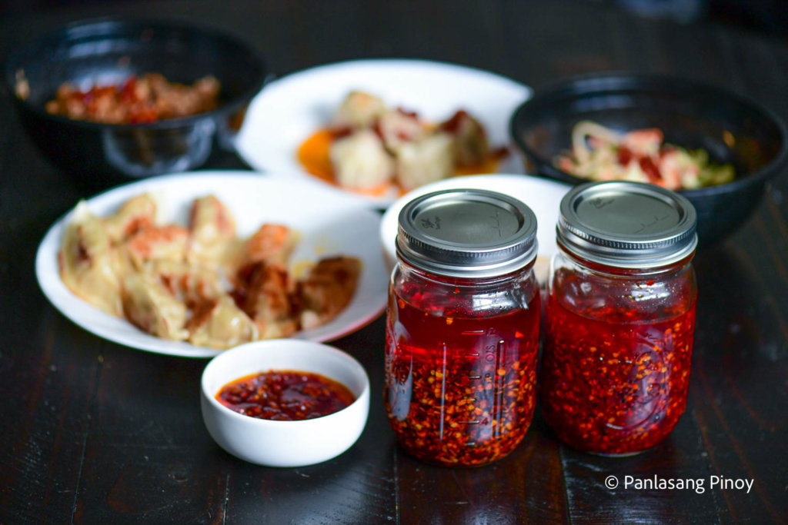

Chili Garlic Oil

Description
From siomai to noodles to salads— this sauce works with many of your favorite recipes! It is of Chinese origin as well, which is why you can probably expect it pairs nicely with many dishes from the country. Filipinos have also learned to integrate it well with our own dishes, and provide that much-needed bite for our palate.
Ingredients
- ¼ lb. fresh Thai chili pepper
- 2 heads garlic
- 2 cups canola oil
- 1 star anise
- 2 bay leaves
- 1 tablespoon hoisin sauce
- 1 tablespoon white vinegar
- 1 teaspoon brown sugar
- 1 ½ teaspoons salt
Steps
- Mince the chili peppers and garlic. Note: you can do it manually or use a food processor. It is also possible to use a blender. In case you decide to go with the latter, the oil should also be added.
- Pour the oil in a pan and then add the minced garlic and chili pepper. Adjust the heat to the lowest setting.
- Add star anise and bay leaves. Cook in a low temperature setting for 30 minutes.
- Remove the star anise and bay leaves. Add vinegar. Continue cooking until the chilies turn dark. Note: this usually takes around 10 minutes. Remember to always set the heat to the lowest setting all throughout the process.
- Turn the heat off. Add hoisin sauce, sugar, and salt. Stir until well blended. Let the chili garlic oil cool down to room temperature.
- Transfer the mixture in a mason jar. Serve as a condiment. Share and enjoy!